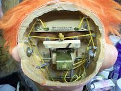

Otis returns!
7/14/2011
Well look who found his way back to his roots - "Otis"!
It was nearly 40 years ago when I first met Doug and Pam Sterner. Back then Pam was using a basic Otis O'Brien doll for her shows. But anyone could see her talent was far superior to the doll she was working with, so I upgraded that first small doll, fitting it with moving eyes, raising eyebrows, hollow body, etc. That was a big improvement, but in a period of a few short years Pam's skill as a ventriloquist was approaching professional level which that deluxe version of Otis could not match. And demand for her shows was increasing as was the size of her audiences. She needed a professional "full size" version of Otis. It was at that point Sterners challenged me to build a custom 38"-40" version of Pam's smaller doll.
With calipers and sculpting tools in hand and several cans of wood dough (Plastic Wood), I went to work. The result was the figure you see here, and of all the figures I have built, this still is one of my favorites. His animations include moving eyes, raising brows, wiggling ears, and stick out tongue. I hadn't seen Otis for several decades, but he surprised me this week by arriving at my doorstep for mechanical tuneup, repainting, and hair styling. I'll enjoy this job and maybe even learn some stories of his escapades over the past 3 plus decades.
A number of years ago Pam donated her original smaller Otis to Vent Haven Museum. If someone reading this sees that figure while touring the Museum Saturday during the International Ventriloquist Convention, send me a photo. With his orange hair, he is easy to spot...check the grandstand display of figures - that's where I last saw him.
The Sterners currently reside in Alexandria, Virgina. Doug is Curator of the Military Times Hall of Valor. Pam went back to school and graduated 2005 with a degree in Political Science. A story about the Sterners is currently scheduled for the September issue of AARP Magazine.
{kind=link}
It was nearly 40 years ago when I first met Doug and Pam Sterner. Back then Pam was using a basic Otis O'Brien doll for her shows. But anyone could see her talent was far superior to the doll she was working with, so I upgraded that first small doll, fitting it with moving eyes, raising eyebrows, hollow body, etc. That was a big improvement, but in a period of a few short years Pam's skill as a ventriloquist was approaching professional level which that deluxe version of Otis could not match. And demand for her shows was increasing as was the size of her audiences. She needed a professional "full size" version of Otis. It was at that point Sterners challenged me to build a custom 38"-40" version of Pam's smaller doll.
{kind=link}
With calipers and sculpting tools in hand and several cans of wood dough (Plastic Wood), I went to work. The result was the figure you see here, and of all the figures I have built, this still is one of my favorites. His animations include moving eyes, raising brows, wiggling ears, and stick out tongue. I hadn't seen Otis for several decades, but he surprised me this week by arriving at my doorstep for mechanical tuneup, repainting, and hair styling. I'll enjoy this job and maybe even learn some stories of his escapades over the past 3 plus decades.
A number of years ago Pam donated her original smaller Otis to Vent Haven Museum. If someone reading this sees that figure while touring the Museum Saturday during the International Ventriloquist Convention, send me a photo. With his orange hair, he is easy to spot...check the grandstand display of figures - that's where I last saw him.
The Sterners currently reside in Alexandria, Virgina. Doug is Curator of the Military Times Hall of Valor. Pam went back to school and graduated 2005 with a degree in Political Science. A story about the Sterners is currently scheduled for the September issue of AARP Magazine.
